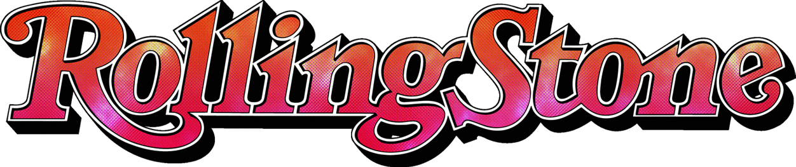

Music finds itself at the center of cultures worldwide, serving as a universal language that can transcend boundaries. It has the unique ability to evoke powerful emotions in those who engage with it.
Music can make you feel melancholy from listening to something like Deftones's 'Change (In the House of Flies)', or full of energy from listening to Metallica's 'Master of Puppets'. Yet, you wouldn’t understand that feeling if you’ve never connected with the world of music and it can be overwhelming with the amount of material that is out there.
What genre and time period would be a good starting place for you looking to start listening to music?
Since there is so much music out in the world, I have to narrow it down somehow. I decided to narrow my view to Rolling Stone's 2012 edition of the top 500 albums of all time.
Because they are a respected music publication, it wouldn't be a bad idea to take them up on their recommendations
From here, I tried to find the most common genre and time period of the albums in the list to find a concrete starting place for new music listeners.
As you can see in the bar graph below, Rock was absolutely the most common genre, and it's not even close. 316 of the albums in the list were Rock, with the runner-ups Funk/Soul and Electronic only occupying 50 and 44 spaces respectively.
Click on a bar to see what some of the albums are!
The graph below displays how many albums in the list were released during a certain time period.
As you can see, most of them were released between 1960 and 1980.

It is also worth noting that an average of two different subgenres apply to albums within the list, which gives you opportunity to explore different sounds that you may end up liking.
Because of all of this information, I think we have a solid starting point if you want to start listening to music.
A great starting point for a new music listener would be Rock music from the 60s, 70s, and 80s. Below I have listed 3 different albums that are worth checking out but don't feel limited those albums, feel free to check out any Rock album from that period.
Maybe even create playlists for songs that you end up enjoying.
Once you start listening to a few albums, begin exploring the subgenres that each album has to offer, whether it be rebellious Punk, or mind-bending Psychedelic rock.
So embark on this journey, immerse yourself in the array of sounds, giving you a deeper appreciation for creativity and expression, and discovering the vast spectrum of music that the world has to offer.
Albums to start off with:
Genres to explore: